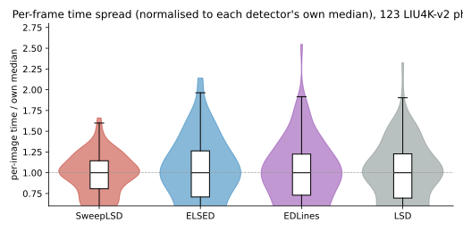

Full-HD photographs, single thread. All baselines are the genuine author implementations, built with the same compiler and ISA target (GCC 15.2, AVX2).
Median per-image processing time over the public LIU4K-v2 corpus (CC0-licensed) —
123 structure-rich Building/Street photographs, natively 4K–6K, downscaled to Full-HD
(1920×1080, 8-bit grayscale) with a properly anti-aliased Lanczos filter. CPU: Intel i7-8700K.
LSD is the canonical implementation (von Gioi et al.); EDLines is the
authors' ED_Lib and ELSED the authors' source (Apache-2.0). All four detectors are
compiled by the same toolchain — GCC 15.2 (MinGW-w64) -O3 -mavx2 -mfma,
linked against an OpenCV built with that same compiler — and timed in one process.
| detector | median time / frame | relative | memory for intermediates |
|---|---|---|---|
| SweepLSD (one-pass) | 11.3 ms | 1× | O(width) |
| SweepLSD (multi-pass driver) | 14.6 ms | 1.3× | O(pixels) |
| ELSED | 51.4 ms | 4.6× | O(pixels) |
| EDLines (ED_Lib) | 58.4 ms | 5.2× | O(pixels) |
| LSD | 278 ms | 25× | O(pixels) |
Corpus-median segment counts sit in the same range across detectors: SweepLSD 1591, ELSED 1377, EDLines 2626, LSD 2473 — so the speed is not bought by detecting fewer segments (the edge-drawing detectors return more at their defaults, consistent with their recovery of the soft, low-contrast structure that SweepLSD's contrast-gated edge model misses; see the evaluation page). On this high-detail corpus ELSED and EDLines run close together — ELSED's usual lead shrinks because its drawing heuristic loses efficiency on cluttered fine texture, a reminder that edge-drawing cost is content-dependent while SweepLSD's is not.
About that OpenCV. Building it with the same
compiler as everything else means it is not the stock Windows OpenCV: it carries neither IPP
(IPPICV / IPP-IW) nor a threading backend, so the cv::Sobel and
cv::GaussianBlur calls inside ELSED and EDLines run as plain single-threaded OpenCV
code. That is worth stating, because it sounds like a handicap on the baselines.
Measured head-to-head, it is not. Running the same ELSED against the stock IPP-enabled, PPL-threaded OpenCV and against this one, interleaved image-by-image over an earlier 150-photo Full-HD test corpus (median of 11 runs each), the build used here comes out 15% faster — 27.2 ms against 31.1 ms median, and faster on all 150 images. The compiler's effect on ELSED's own scalar edge-drawing dominates whatever IPP contributes to its two preprocessing calls. The baselines are therefore represented by the faster of the two builds available, not the slower one.
Because the LIU4K-v2 photographs are natively 4K–6K, the same scene is downscaled to five resolutions from 640×360 up to 3840×2160 (4K) without ever upsampling (same in-process harness, so ratios are comparable):
| resolution | SweepLSD (one-pass) | ELSED | EDLines (ED_Lib) | LSD |
|---|---|---|---|---|
| 640×360 (0.23 MP) | 1.5 ms | 7.3 ms | 8.0 ms | 31.9 ms |
| 1280×720 (0.92 MP) | 5.3 ms | 24.8 ms | 27.5 ms | 124 ms |
| 1920×1080 (2.07 MP) | 11.3 ms | 51.4 ms | 58.4 ms | 278 ms |
| 2560×1440 (3.69 MP) | 19.5 ms | 89.3 ms | 102 ms | 535 ms |
| 3840×2160 (8.29 MP) | 44.5 ms | 219 ms | 255 ms | 1253 ms |
SweepLSD is ~4.6–4.9× faster than ELSED and ~5.1–5.7× faster than EDLines at every scale, and the ratio is essentially flat across the whole 36× span of pixel counts — the signature of a content- and resolution-independent per-pixel cost. LSD stays 21–28× behind throughout.
Memory. Peak process working set (PeakWorkingSetSize, one detector per
process) across the five resolutions of §2. SweepLSD's one-pass driver holds the smallest
footprint at every resolution, and its peak grows only 3.8× (5.9→22.4 MB) as the pixel
count grows 36×, because its intermediate state is O(width) rather than O(pixels); most of its
22 MB at 4K is the input image itself.
| detector | 360p | 720p | 1080p | 1440p | 4K |
|---|---|---|---|---|---|
| SweepLSD (one-pass) | 5.9 | 7.4 | 10.0 | 13.3 | 22.4 |
| SweepLSD (multi-pass) | 7.6 | 14.3 | 25.8 | 41.2 | 85.5 |
| ELSED | 9.9 | 22.4 | 37.7 | 69.1 | 146.7 |
| EDLines (ED_Lib) | 10.4 | 22.2 | 41.3 | 66.9 | 154.1 |
| LSD | 12.6 | 33.6 | 67.3 | 114.1 | 255.0 |
Peak working set, MB. At 4K SweepLSD one-pass is 22 MB against ELSED 147 (6.5×), EDLines 154 (6.9×), LSD 255 (11.4×).
Latency. Instrumenting the labeller's emission point over a Full-HD photograph corpus (222,507 segments): a segment is emitted a median 6.5 rows after its last pixel enters the detector (95% within 7.0, 99% within 7.5, worst 11.3) — ≈0.19 ms at 1080p30 video timing, independent of image height. Any detector that must hold the image has a latency floor of one frame period (33 ms) plus its processing time.
A median is not a frame budget. A detector that averages 27 ms but occasionally takes 68 ms will drop frames at 30 fps; one that never leaves a narrow band will not. The chart below divides each detector's 123 per-image times by its own median, so the four distributions can be compared on shape alone — how far the frame time wanders from typical, regardless of how fast that typical is.
Protocol: the same 123 LIU4K-v2 Full-HD photos and the same four GCC 15.2 + AVX2 builds as §1, each image timed as the median of 5 runs. Dispersion is the spread between images — how far each image's frame time wanders from the corpus median — reported in scale-free terms so the four detectors compare on shape, not on how fast their typical is. (With only 5 runs per image the fastest detector's CV is a mild over-estimate, since run-to-run jitter adds a little; the ordering is unaffected.)

| detector | median | SD | CV (SD ÷ mean) | p95 | worst frame |
|---|---|---|---|---|---|
| SweepLSD (one-pass) | 11.3 ms | ±2.7 ms | 24.4% | 15.0 ms (1.33×) | 18.8 ms (1.66×) |
| ELSED | 51.4 ms | ±21.4 ms | 41.8% | 84.6 ms (1.64×) | 110 ms (2.14×) |
| EDLines (ED_Lib) | 58.4 ms | ±22.5 ms | 38.2% | 99.4 ms (1.70×) | 149 ms (2.55×) |
| LSD | 278 ms | ±102 ms | 37.0% | 441 ms (1.59×) | 646 ms (2.33×) |
SweepLSD is the tightest on all three scale-free measures (CV 24% against 37–42%, p95 1.33× against 1.6–1.7×, worst frame 1.66× against 2.1–2.6×), and its absolute spread is smaller by a wider margin still — ±2.7 ms against ±21, ±23 and ±102 ms. Part of that last gap is arithmetic rather than virtue: a method with a smaller total simply has less room to vary in milliseconds. The scale-free columns are the ones that carry the claim, and they agree.
The reason is structural. Roughly half of SweepLSD's Full-HD cost is spent identically on every image — ingest, the 5×5 gaussian, the 2×2 gradient and the thresholding pass all touch every pixel and nothing else. Only labelling and the sub-pixel fit scale with how much edge the image actually contains, so a densely textured frame lengthens part of the work rather than all of it.
Two things this does not say. First, the advantage is in the tail, not the middle. The interquartile bands are close — 0.81–1.14× for SweepLSD against 0.71–1.26× for ELSED — and the separation only opens up above the 95th percentile (1.33× against 1.64×) and at the worst frame (1.66× against 2.14× and 2.55× for ELSED and EDLines). That tail is exactly what a real-time budget has to absorb, but the typical frame is more alike across detectors than the summary statistics suggest.
Second, these are differences between images, each image timed as its own median over repeated runs. They are not run-to-run jitter on a fixed input: on a general-purpose Windows box that sits at 3–4% and is dominated by the operating system rather than the detector, so it cannot be attributed to any of them here.
Per-stage profile (sweeplsd_profile, median over LIU4K-v2 Full-HD photos,
multi-pass driver so stages are separable; shipped configuration):
| stage | ms | share |
|---|---|---|
| 1. gaussian | 1.7 | 13% |
| 2. gradient | 2.3 | 17% |
| 3. edge (threshold + sub-pixel NMS + hysteresis) | 1.4 | 11% |
| 4. endpoint candidates | 1.9 | 14% |
| 5. labelling + judgment | 6.0 | 45% |
The four front-end row kernels auto-vectorize and stay near-constant (~1.4–2.3 ms) whatever the content; stage 5, the streaming labeller, is the content-dependent stage — it accumulates a moment fit per edge run and fires the judge per closed run, so it scales with segment density and is the largest single stage on this high-detail corpus (~45%; it falls toward 30% on sparser imagery). The one-pass driver runs the same kernels but keeps only a few rows of each intermediate, so its working set stays in L1/L2 — which is why it is faster than the multi-pass driver despite doing identical work.
The kernels contain no SIMD intrinsics by design, so all of the speed comes from compiler auto-vectorization. That makes the toolchain not a footnote but a factor of four between the best and worst option below. What does not change is what comes out — the segments are bit-identical across every build below, verified float-for-float in exact hex form across GCC, Clang, clang-cl and MSVC (40 photographs, both drivers, 123,454 segment records), and over 186 images between the two GCC generations.
| compiler | ABI | Full-HD one-pass | vs GCC 15.2 | auto-vectorizes |
|---|---|---|---|---|
| GCC 15.2 (MinGW-w64) | MinGW | ~11 ms | 1.00× | all five stage kernels — the recommended build |
| GCC 8.1 (2018) | MinGW | ~14 ms | 1.26× | all five, less well; the pixel-count-proportional cost alone is ~41% higher than GCC 15.2 |
| Clang 22.1 (llvm-mingw) | MinGW | ~15 ms | 1.34× | all five |
| clang-cl 22.1 | MSVC | ~15 ms | 1.36× | all five — the recommended build for the MSVC ABI |
MSVC 19.34 (cl) | MSVC | ~47 ms | 4.2× | all but the endpoint-candidate, gradient and edge kernels |
The one toolchain that is far off is MSVC's own cl, and the penalty is not
spread across the pipeline — it sits in one kernel: the endpoint-candidate 5×5 ring test,
which is cheap under GCC 15.2 and Clang but dominates the frame under cl,
while smoothing and labelling stay within noise of GCC everywhere. cl gives up
further ground on the gradient and edge stages too. This is not an ISA-flag problem
(-march=native changes nothing), and it is not the kernel's dataflow either:
cl inlines the kernel and then emits fully scalar code, and it also declines a
reduced probe of the same shape with only 25 loads and one comparison. Rewriting around that
would mean the hand-written intrinsics this project deliberately avoids, so it is recorded as
a limit of that vectorizer. clang-cl keeps the MSVC ABI and recovers the speed — 3.0×
faster than cl on every image tested, and within 1.4× of GCC. Every toolchain
here compiles cleanly, passes every test, and returns exactly the same segments.
Earlier revisions of this page reported Clang at ~33 ms (3.8×) and called the
gap open work. It was: Clang's inliner was keeping the ring test as a real call — one call
per pixel — which blocked vectorization of the row loop outright. Force-inlining it moved
Clang from 3.8× to 1.34× with bit-identical output and no effect on GCC. The
cl row is the part that did not yield.
Protocol: all toolchains built from the same source at the same ISA target
(AVX2); the ratio column is the machine-independent form (each toolchain relative to GCC 15.2,
essentially content-independent), and the absolute column applies it to this page's ~11 ms
Full-HD one-pass reference. The MSVC figure is toolset 19.34 (VS 2022
17.4); newer cl releases were not tested.
The sensitivity is specific to this kind of code: rebuilding the baselines across the same
GCC generations moves them by only a few percent (ELSED 3.03 → 3.00 ms/MP, unchanged within
noise), because their anchor-chaining inner loops are branch-bound and do not vectorize.
The raster-sweep design is what makes a better vectorizer pay off — and, as the
cl row shows, what makes a worse one cost.
cmake -DSWEEPLSD_BUILD_BENCH=ON fetches the
baseline detectors at configure time (LSD is AGPL-3.0 and is deliberately not vendored
in this MIT repository), then run sweeplsd_time_methods <dir-of-pngs>.
Genuine-EDLines timings need OpenCV (sweeplsd_edlines_runner is built
automatically when OpenCV is found); ELSED rows come from the authors' source built
separately (Apache-2.0) and are ingested with --elsed-dir in the same file
format as the EDLines runner.